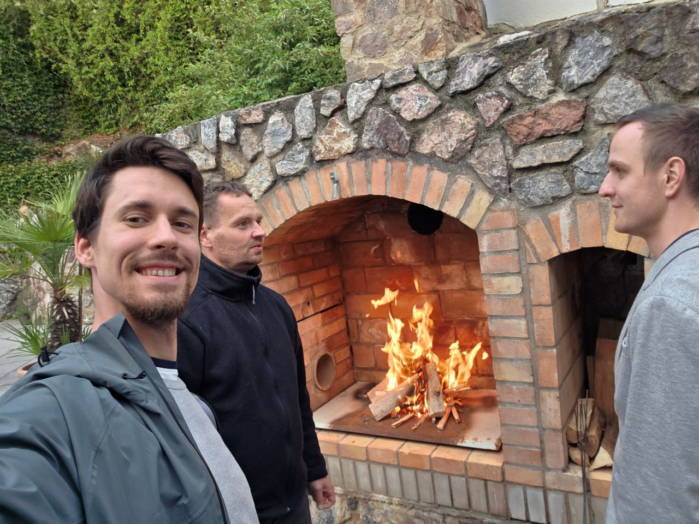

MĂ©nÄ› vizitek, vĂce upĹ™Ămnosti: TišnovskĂ˝ BforB klub zaĹľehl novou Ă©ru
Ve stĹ™edu 2. Ĺ™Ăjna se ÄŤlenovĂ© networkingovĂ©ho klubu Business for Breakfast Tišnov sešli na akci, která se vymykala běžnĂ˝m zvyklostem. MĂsto rychlĂ©ho koleÄŤka pĹ™edstavovánĂ a vĂ˝mÄ›ny vizitek jsme se od 16:00 sešli v pĹŻvabnĂ©m prostĹ™edĂ penzionu Laskala, abychom udÄ›lali nÄ›co mnohem dĹŻleĹľitÄ›jšĂho – abychom se zastavili a promluvili si.
CĂlem nebylo primárnÄ› domluvit obchody, ale restartovat a prohloubit samotnĂ© fungovánĂ našà skupiny. ÄŚtyĹ™i hodiny jsme vÄ›novali otevĹ™enĂ© a upĹ™ĂmnĂ© diskuzi o tom, co od klubu a od sebe navzájem oÄŤekáváme, jakĂ© jsou naše podnikatelskĂ© i osobnĂ ambice a jak spoleÄŤnÄ› nastavit pravidla, která nám všem budou dávat smysl.

Symbolický oheŠa otevřená atmosféra
KouzelnĂ© prostory penzionu Laskala, kterĂ© propojujĂ ĂştulnĂ˝ interiĂ©r s pĹ™Ăjemnou venkovnĂ zahradou, vytvoĹ™ily dokonalou kulisu pro neformálnĂ a hlubokou debatu. A k tomu se pĹ™idal jeden historickĂ˝ moment: v krbu penzionu byl vĹŻbec poprvĂ© zaĹľehnut oheĹ. Plameny se staly symbolem celĂ©ho veÄŤera – symbolem tepla lidskĂ˝ch vztahĹŻ, energie novĂ˝ch nápadĹŻ a spoleÄŤnĂ©ho zápalu pro budoucnost našeho klubu.
Bylo osvěžujĂcĂ odloĹľit na chvĂli „byznys masky“ a mluvit o tom, co je pro nás skuteÄŤnÄ› dĹŻleĹľitĂ©. PrávÄ› v takovĂ˝ch chvĂlĂch se rodĂ ty nejsilnÄ›jšà a nejhodnotnÄ›jšà vztahy, kterĂ© pĹ™esahujĂ rámec běžnĂ˝ch obchodnĂch kontaktĹŻ.
Co jsme si odnesli?
Ne odznáčky a desĂtky vizitek, ale nÄ›co mnohem cennÄ›jšĂho. JasnÄ›jšà vizi, kam jako klub směřujeme, a obnovenĂ˝ pocit sounáleĹľitosti. Ukázalo se, Ĺľe sdĂlenĂ vlastnĂch cĂlĹŻ a oÄŤekávánĂ je nejlepšà cestou, jak budovat komunitu, kde si ÄŤlenovĂ© nejen doporuÄŤujĂ zakázky, ale takĂ© se vzájemnÄ› podporujĂ, inspirujĂ a posouvajĂ dál.
Tento veÄŤer nebyl jen dalšà networkingovou akcĂ v kalendáři. Byl to investovanĂ˝ ÄŤas do základĹŻ, na kterĂ˝ch chceme stavÄ›t silnĂ˝ a prosperujĂcĂ klub. A ten oheĹ v krbu? Ten v nás hořà dál.
↠Zpět na přehled článků